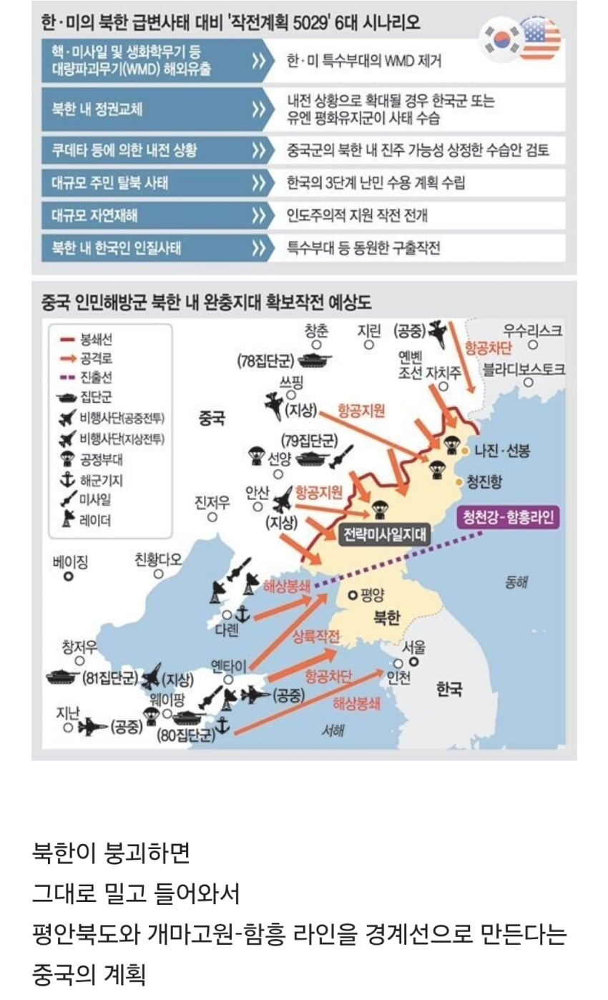

싱글벙글 북한 정권 붕괴 시 중국군 북한 장악 시나리오.jpg
댓글
그럼 지랄만하지말고 니가 함 털어봐.
사람들 댓글마다 한숨만 쉬지 말고 니 의견을 적어봐.
한국은 군사력에서도, 명분에서도 중국에 상대가 안됨. 북중이 상호방위조약을 맺고 있는데 한미가 유사시에 군사력을 투입하면 즉시 밀고 내려옴.
한미가 가만히 있는다해도 100% 내려올거임. 중국한테 북한은 절대 잃을수없는 지리적요충지니까.
625때 중국이 국력 다 쏟아부어가며 북한을 지켜내려했던것도 북한이 한미에 먹히면 중원은 그냥 뻥 뚫리는거기때문임. 북한도 군사력대부분을 dmz주변에 집중시켜놨고 한국이 이 험준한 산악지형+지뢰밭+북한군들 다 뚫고 올라가려면 얼마나 걸리겠냐
중국은 그냥 하이패스야
댓글마나 하아하아 거리는데 발정난 암캐임? ㅋㅋㅋㅋㅋㅋㅋㅋㅋㅋㅋㅋ
언젠간 미중 전쟁할 텐데 그때까지만 북한 붕괴하지 않기를
저렇게 하는 순간 대만은 영구독립이지
쭉 내려오는건 아마 안할건데 동쪽 항구 지역 일부 먹고 아 몰랑 아무튼 여기 우리땅임 정도는 할듯?
쟤네는 북한의 혈맹국이라 유사시 아무런 저항 없이 군대 입성 가능해서 북한 정권 붕괴되면 저 시나리오대로 무조건 가능하지 잘하면 평양까지도 먹을 듯?
괜히 손해보면서도 우리나라가 대북지원 하는게 아니거든ㅋㅋ 대가리 꽃밭 새끼들이나 북괴정권 붕괴하라고 고사 지내는거고ㅋㅋ

차라리 러시아가 동해쪽 먹어가는 한이있어도 중국에는 절대 내주면 안됨
진짜 좆도 모르는 개병신들이 입터는거 왤케 역겹지ㅋㅋㅋ
개붕이들 ㄹㅇ소분홍이나 넷우익이랑 다른게 전혀 없음